最新の展示施設をオープン！
神戸水族館が新たな展示施設を追加し、より魅力的な海洋生物の世界をお楽しみいただけます。深海ゾーンでは珍しい発光生物を間近でご覧いただけます。
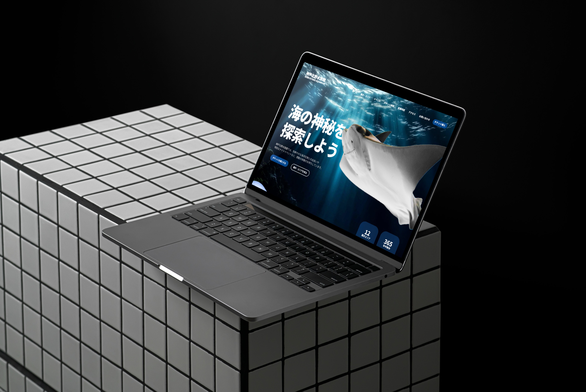
神戸北野水族館
KOBE KITANO AQUARIUM
チケット購入
神戸北野水族館では、色鮮やかな海洋生物との出会いや
特別なナイトイベントなど、感動の体験がお待ちしています。
チケットを購入する
展示・エリアを見る
12
展示エリア
365
年中無休
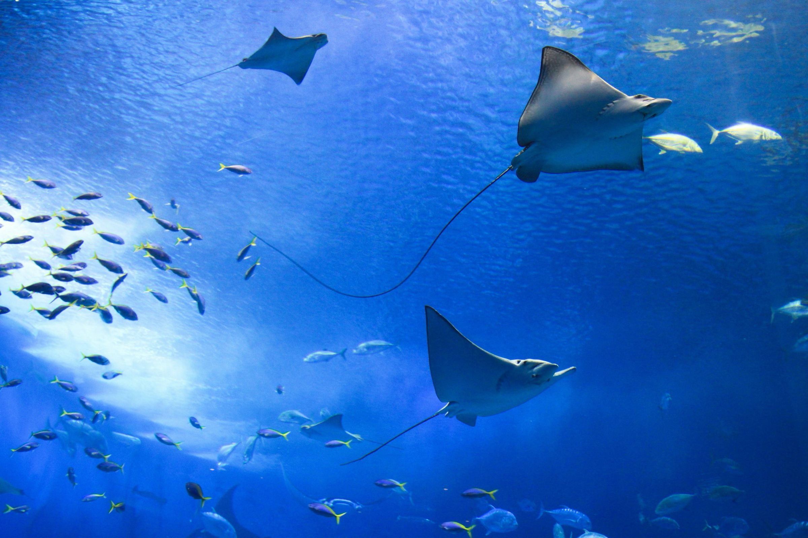
Latest News & Events
イベント情報・最新のニュース
ニュース
2025.06.01
最新の展示施設をオープン！
神戸水族館が新たな展示施設を追加し、より魅力的な海洋生物の世界をお楽しみいただけます。深海ゾーンでは珍しい発光生物を間近でご覧いただけます。
詳しく見る →
ニュース
2025.05.20
「神戸水族館」が地域コラボ企画を展開！
神戸市内の学校や地域団体とのコラボレーションプロジェクトがスタートしました。子どもたちが海洋生物について楽しく学べるプログラムをご用意しています。
詳しく見る →
イベント
2025.06.15
「夜の水族館ナイトフィーバー」開催決定！
夜間限定の展示やスペシャルライブパフォーマンスなど、一風変わった水族館の魅力を満喫しましょう。幻想的な水中ライトアップをお楽しみください。
スケジュールを見る →
ニュース
2025.05.10
新しいレストランがオープン！
地元の食材を使った料理や海鮮グルメを楽しみながら、水族館の展示と一緒に至福の時間を過ごしましょう。瀬戸内の新鮮な魚介類を使ったコース料理が自慢です。
メニューを見る →
チケット情報
各種割引・ご注意
※ 障がい者手帳をご提示の方とご同伴者（1名様）は、入場料金が一般料金の半
額（1円単位を四捨五入）になります。
※ 高校生の方は、チケット売り場で生徒手帳をご提示ください。
※【年間パスポート】障がい者手帳をご提示の方は、年会費が半額となります。
※【年間パスポート】高校生の方は、チケット売り場で生徒手帳をご提示ください。
オンラインでチケットを購入
事前購入で当日の窓口並びをスキップ。スマートに入館いただけます。
今すぐ購入する
年間パスポートの詳細
お問い合わせ:
078-000-0000
受付時間 9:00〜18:00
神戸北野水族館
KOBE KITANO AQUARIUM
神戸北野水族館 KOBE KITANO AQUARIUM
〒650-0002 兵庫県神戸市中央区北野町1-1-8
TEL: 078-000-0000
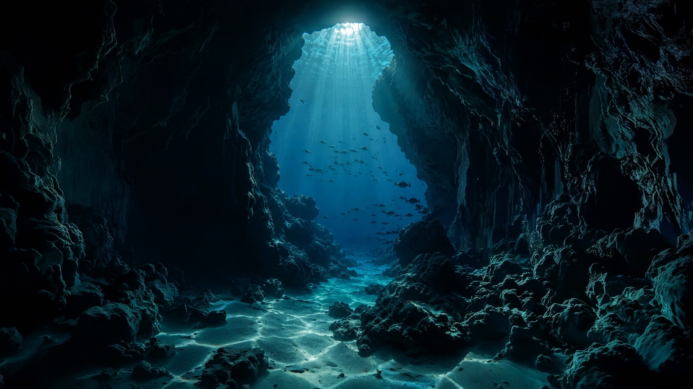
アクセス情報
所在地：〒650-0002 兵庫県神戸市中央区北野町1-1-8
JR線 JR「三ノ宮」駅より徒歩10分
地下鉄・ポートライナー 「三宮」駅より徒歩10分
阪急・阪神 「神戸三宮」駅より徒歩10分
新幹線・地下鉄 「新神戸」駅より徒歩10分
Google マップで表示
北野町1-1-8, 神戸市中央区
6月の営業時間
9:30 — 20:00
最終入館 19:00
10:00 — 20:00
最終入館 19:00
0:30 — 20:00
最終入館 19:00
年中無休 OPEN 365
※ 施設点検、気象状況などで臨時休業をする場合があります。最新情報は公式SNSをご確認ください。
営業時間とアクセス
Hours & Access
ホーム
展示・エリア
イベント情報
チケット情報
営業時間
アクセス
お問い合わせ
会社概要
安心・安全への取り組み
プライバシーポリシー
採用情報
サイトマップ
Copyright © Kitano Aquarium. All Rights Reserved.
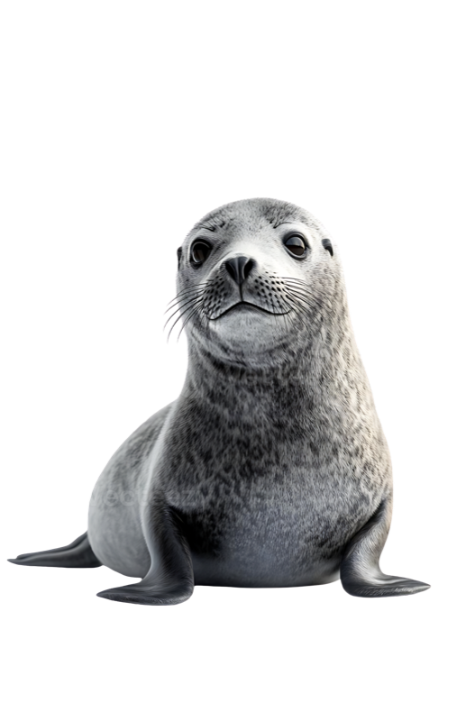
会社概要 ｜ 安心・安全への取り組み ｜ プライバシーポリシー ｜ 採用情報 ｜ サイトマップ
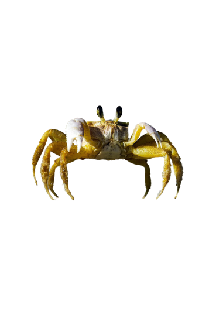
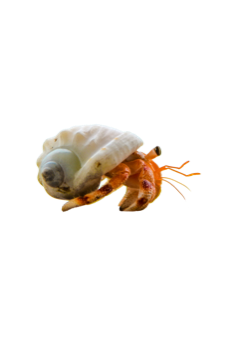
Ticket Information
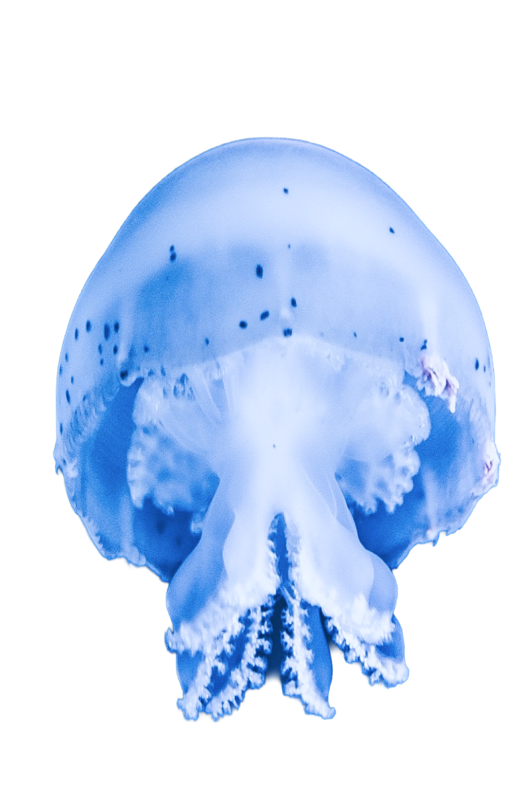
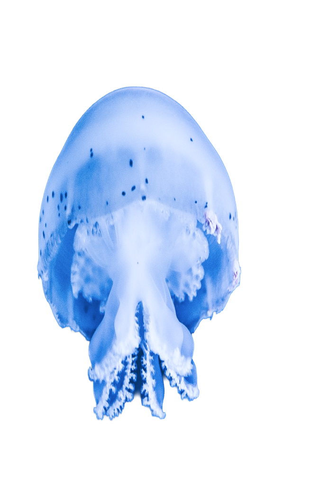
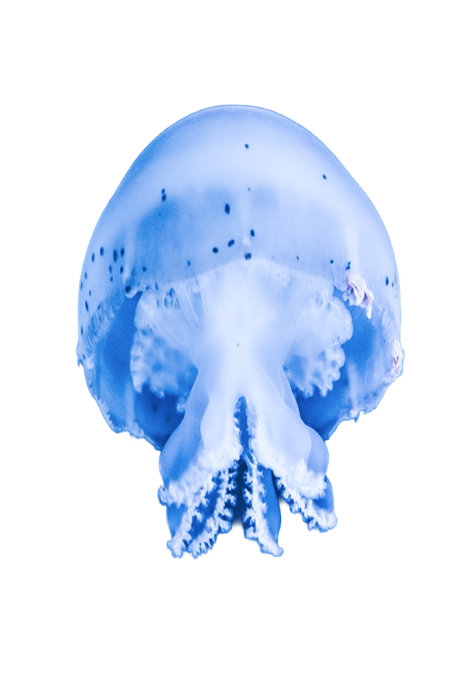
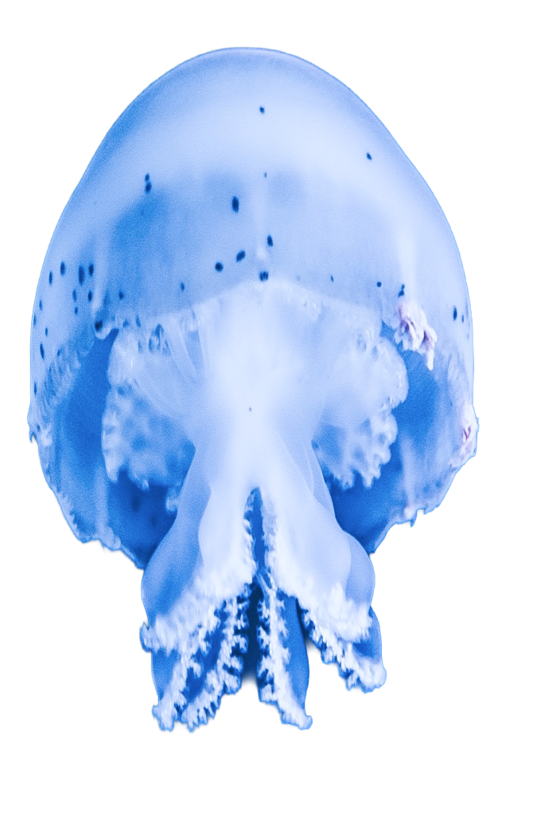
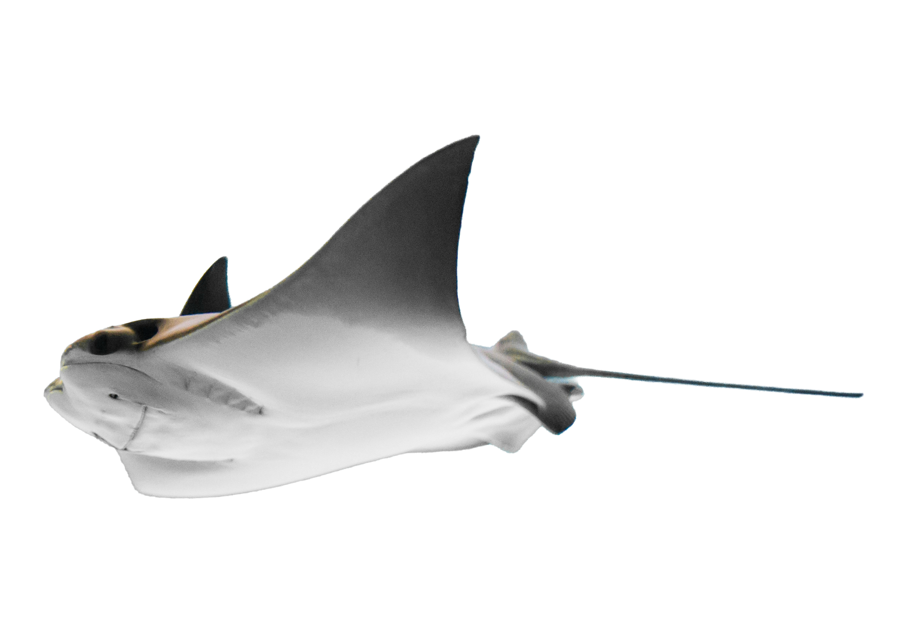
 Back to Top
Back to Top
神戸北野水族館では、色鮮やかな海洋生物との出会いや特別なナイトイベントなど、感動の体験がお待ちしています。
12展示エリア
365年中無休
Latest News & Events
神戸水族館が新たな展示施設を追加し、より魅力的な海洋生物の世界をお楽しみいただけます。深海ゾーンでは珍しい発光生物を間近でご覧いただけます。
神戸市内の学校や地域団体とのコラボレーションプロジェクトがスタートしました。子どもたちが海洋生物について楽しく学べるプログラムをご用意しています。
夜間限定の展示やスペシャルライブパフォーマンスなど、一風変わった水族館の魅力を満喫しましょう。幻想的な水中ライトアップをお楽しみください。
地元の食材を使った料理や海鮮グルメを楽しみながら、水族館の展示と一緒に至福の時間を過ごしましょう。瀬戸内の新鮮な魚介類を使ったコース料理が自慢です。
Ticket Information
| 対象区分 | 一般料金 | 年間パス |
|---|---|---|
| 大人（大学生含む） | ¥2,400 | ¥5,300 |
| 高校生 | ¥1,800 | ¥4,000 |
| 中・小学生 | ¥1,200 | ¥2,700 |
| 幼児（3歳以上） | ¥1,800 | ¥4,000 |
事前購入で当日の窓口並びをスキップ。スマートに入館いただけます。
今すぐ購入するAccess
〒650-0002 兵庫県神戸市中央区北野町1-1-8